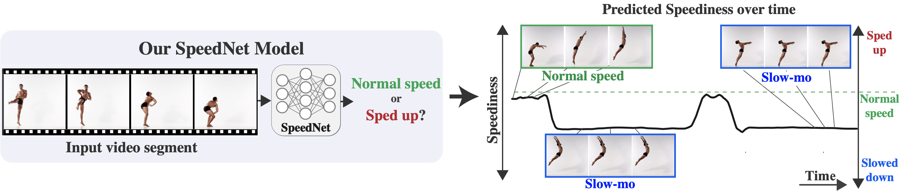
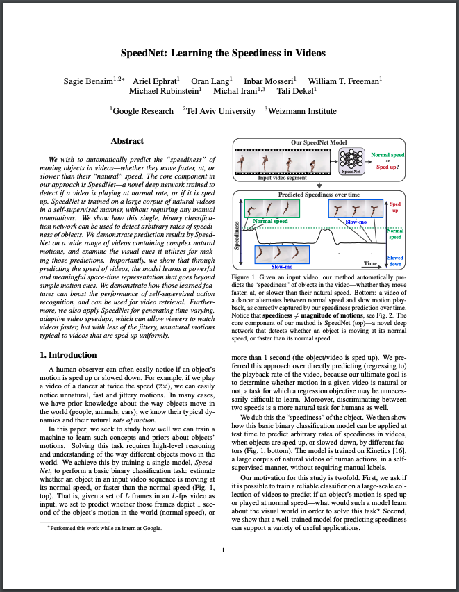
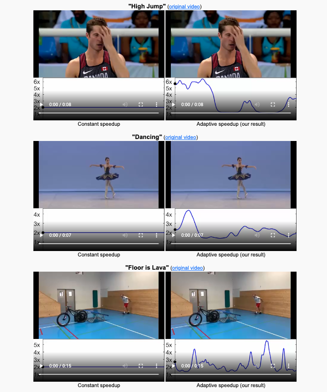

SpeedNet: Learning the Speediness in Videos
| Sagie Benaim | Ariel Ephrat | Oran Lang | Inbar Mosseri | William T. Freeman | Michael Rubinstein | Michal Irani | Tali Dekel |
|  |
Given an input video, our method automatically predicts the "speediness" of objects in the video-—whether they move faster, at, or slower than their natural speed. Bottom: a video of a dancer alternates between normal speed and slow motion play-back, as correctly captured by our speediness prediction over time. The core component of our method is SpeedNet (top)-—a novel deep network that can detect whether an object is moving at, or faster than, its normal speed. |
Abstract
We wish to automatically predict the "speediness" of moving objects in videos---whether they move faster, at, or slower than their "natural" speed.
The core component in our approach is SpeedNet---a novel deep network trained to detect if a video is playing at normal rate, or if it is sped up. SpeedNet is trained on a large corpus of natural videos in a self-supervised manner, without requiring any manual annotations. We show how this single, binary classification network can be used to detect arbitrary rates of speediness of objects.
We demonstrate prediction results by SpeedNet on a wide range of videos containing complex natural motions, and examine the visual cues it utilizes for making those predictions. Importantly, we show that through predicting the speed of videos, the model learns a powerful and meaningful space-time representation that goes beyond simple motion cues. We demonstrate how those learned features can boost the performance of self-supervised action recognition, and can be used for video retrieval. Furthermore, we also apply SpeedNet for generating time-varying, adaptive video speedups, which can allow viewers to watch videos faster, but with less of the jittery, unnatural motions typical to videos that are sped up uniformly.
Paper
|  | "SpeedNet: Learning the Speediness in Videos", Oral presentation [Arxiv][CVF] |
Supplementary Material
|  | [Link] |
Last updated: April 2020